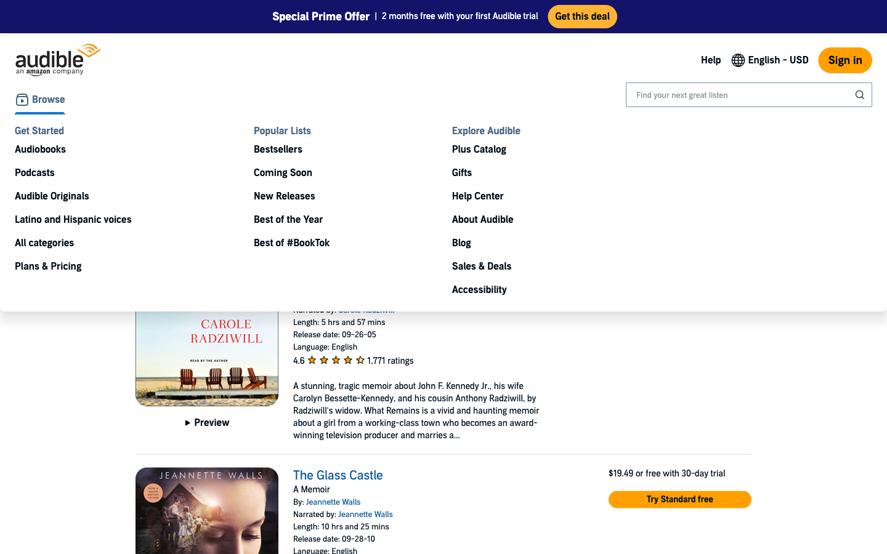
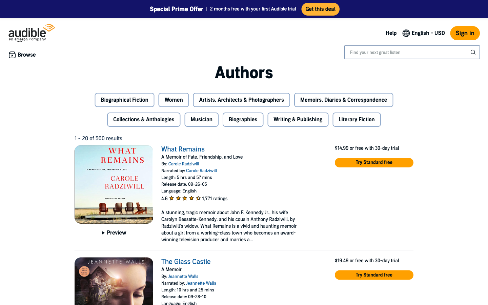
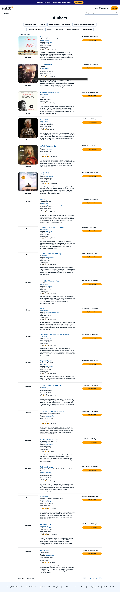
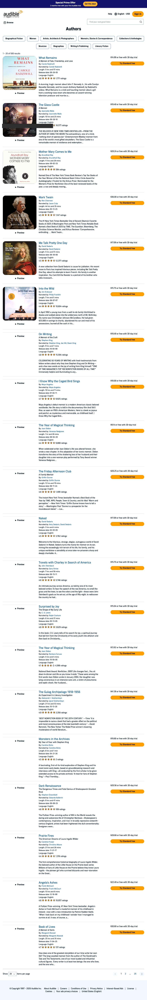
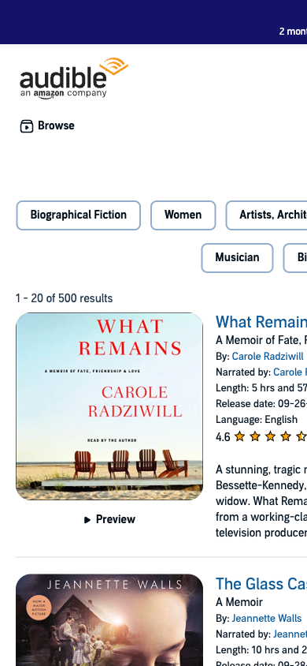

Audible's browse navigation surfaces curated "Popular Lists" collections that let listeners discover audiobooks by editorial curation (Bestsellers, New Releases, etc.). The product requires adding a dedicated Narrators entry to the Popular Lists section — mirroring the existing Authors page — so listeners who want to find audiobooks by a specific narrator's voice, style, or specialty can do so from the top-level navigation.
The prototype will demonstrate: (a) the nav edit (Series → Narrators in Popular Lists) and (b) a fully functional Narrators browse page with search and filter capability, built 1:1 to the Audible Authors page layout and design system.


Primary: Audiobook listener who is narrator-aware — someone who has a preferred narrator's voice and wants to find their complete catalog, or who is exploring audiobooks by voice style rather than by subject or title. May be a power user or a casual listener who had a great experience with one narrator. Context: desktop browser (primary), mobile (secondary). Technical fluency: comfortable with e-commerce browse UX. Emotional state: exploratory / discovery mode.
Secondary: First-time Audible trial user arriving via the promo banner, browsing the catalog before committing to a subscription.
| Field | Value |
|---|---|
| Primary metric | Prototype demonstrates nav edit (Series → Narrators) and Narrators browse page end-to-end |
| Secondary metrics | Filter controls visible and usable (narrator name, genre specialty, voice style, language, most-listened); page matches Authors layout 1:1 |
| Proxy signals | Stakeholder can identify Narrators entry in Popular Lists without assistance; filter panel is self-explanatory |
| Screen / Feature | Description |
|---|---|
| Browse nav edit | Replace "Series" with "Narrators" in the Popular Lists section of the Browse mega-menu panel |
| Narrators browse page | New page mirroring Audible Authors layout: promo banner, nav header, chip filter row, audiobook list — with "Narrators" as heading and narrator-specific metadata |
| Filter/search bar | Narrator-specific filters: narrator name (text search), genre specialty (chips/dropdown), voice style (chips/dropdown), language (chips/dropdown), most-listened (sort option) |
| Desktop layout | 1440px viewport, three-column list item layout |
| Mobile layout | 390px viewport, responsive single-column layout |
| Item | Reason |
|---|---|
| Live backend / real narrator data | Prototype uses static representative data |
| Account / sign-in flow | Not part of this feature |
| Checkout / purchase flow | Not part of this feature |
| Authors page modifications | Reference only — not edited |
Output format: HTML prototype (static file)
Device targets: Desktop 1440px + mobile 390px
Accessibility: WCAG AA — 4.5:1 minimum contrast for normal text, 3:1 for large text. All extracted color pairs pass.
Brand: Must use Audible's extracted design tokens exactly — no personal aesthetic changes to existing components.
Font: "Audible Sans" is proprietary — prototype uses Arial as fallback.
| Reference | Draw from |
|---|---|
| Audible Authors page (live) | Complete layout, component structure, design tokens, interaction patterns — source of truth |
| audible-authors-desktop-1440-viewport.png | Desktop initial viewport reference |
| audible-authors-desktop-1440-full.png | Full-page list layout reference |
| audible-authors-mobile-390-full.png | Mobile layout reference |
| audible-browse-nav-open-live.png | Browse nav panel reference (A/B discrepancy noted) |
| Keyword | Pixel decision | Confirmed by |
|---|---|---|
| Match Audible Authors 1:1 | All spacing, colors, typography, border-radius from getComputedStyle() — no approximations | url_extracted |
| Navy promotional accent | Promo banner: rgb(19, 19, 105) — #131369 | url_extracted |
| Amber CTA | Primary button: rgb(255, 160, 0) — #ffa000 | url_extracted |
| Blue link / active | Links: #0e5b9b; Active/selected: #1479cf | url_extracted |


| Category | Token | Value | Source | Confirmed |
|---|---|---|---|---|
| Color | promo-navy | #131369 | url_extracted (shadow DOM) | yes |
| Color | cta-amber | #ffa000 | url_extracted | yes |
| Color | banner-cta-amber | #ffb333 | url_extracted | yes |
| Color | link-blue | #0e5b9b | url_extracted | yes |
| Color | brand-blue | #1479cf | url_extracted | yes |
| Color | text-primary | #010e19 | url_extracted | yes |
| Color | text-secondary | #061624 | url_extracted | yes |
| Color | chip-border | #93accd | url_extracted | yes |
| Color | chip-selected-bg | #e6f3ff | url_extracted | yes |
| Color | chip-selected-border | #1479cf | url_extracted | yes |
| Color | search-border | #7690b2 | url_extracted | yes |
| Color | browse-text | #4a6687 | url_extracted | yes |
| Typography | font-family | "Audible Sans", Arial, sans-serif | url_extracted | yes |
| Typography | heading-h1 | 48px / 700 / 52px line-height | url_extracted | yes |
| Typography | book-title | 20px / 400 / 26px line-height | url_extracted | yes |
| Typography | metadata-small | 13px / 400 / 19px line-height | url_extracted | yes |
| Typography | body | 14px / 400 / 20px line-height | url_extracted | yes |
| Typography | nav-link / chip | 16px / 400 / 24px line-height | url_extracted | yes |
| Typography | banner-title | 18px / 700 / 26px line-height | url_extracted | yes |
| Spacing | promo-banner-height | 54px | url_extracted | yes |
| Spacing | nav-header-height | 136px | url_extracted | yes |
| Spacing | cover-image-size | 232×232px rendered | url_extracted | yes |
| Spacing | content-max-width | 1000px | url_extracted | yes |
| Spacing | list-item-gutter | 12px padding each side | url_extracted | yes |
| Radius | chip-radius | 8px | url_extracted | yes |
| Radius | button-radius | 9999px (pill) | url_extracted | yes |
| Radius | search-radius | 2px | url_extracted | yes |
| Component | Figma Node ID | Variant Properties | Confirmed States | Unconfirmed States |
|---|---|---|---|---|
| adbl-button (primary) | N/A | variant: primary; size: sm/md | resting (amber bg) | hover exact bg |
| adbl-chip | N/A | outline / selected | outline, selected | hover exact |
| adbl-nav-mega-menu | N/A | open / closed | open, closed | none |
| search input | N/A | resting / focus | resting | focus border |
| Component | Active State Treatment | Source |
|---|---|---|
| adbl-chip (selected) | bg: #e6f3ff; border: 2px solid #1479cf | url_extracted |
| Browse nav indicator | 4px horizontal bar, #1479cf, below button text | url_extracted |
| Pagination current page | Plain span (not linked), no special background | url_extracted |
Brand name: Audible (an Amazon company)
Logo: Inline SVG, role="img", aria-label="audible, an amazon company", 140×55px, Audible wave mark + wordmark
Primary font: "Audible Sans" (proprietary; fallback: Arial)
Primary action color: Amber #ffa000 (Sign In, CTA buttons)
Brand accent: Navy #131369 (promo banner)
Link color: #0e5b9b
Voice/tone: Clear, informative, discovery-focused
Surface and tone: Clean white page background (#ffffff). Light, editorial feel. Content-forward layout with generous whitespace between list items (~20px margin + 1px divider). No decorative backgrounds or gradients in the main content area.
Color system: Two accent surfaces — (1) navy promo banner at top (#131369) with white text, (2) amber CTA buttons (#ffa000) on white background. Link blue (#0e5b9b) for all interactive text links. Brand blue (#1479cf) for active/selected states and the Browse indicator bar. Secondary text (#061624) for metadata labels.
Typography: Single typeface — "Audible Sans" (Arial fallback). Scale: H1 48px/700, book titles 20px/400, nav/chip labels 16px/400, metadata 13px/400, body text 14px/400, banner title 18px/700. No serif, no display face.
Components: Web component architecture (adbl-* elements). All interactive elements use shadow DOM. Chips: 8px radius, 2px border. Buttons: 9999px radius (pill). Cover art: 232×232px square. List items: full-width rows separated by 1px rgba dividers.
Motion: No scroll-driven animation. No page transitions. Hover states instantaneous. Browse nav panel open/close is the only significant state change on the page.
Layout: Single content column (max-width 1000px, centered). Nav and promo banner full-width (1440px). Three-column list item grid: cover 4/12 (~232px) | metadata 7/12 (~448px) | price 3/12 (~232px).
| Adjective | Writing rule | Confirmed by |
|---|---|---|
| Clear | Plain language, no jargon; labels match Audible conventions exactly | url_extracted verbatim copy |
| Informative | All metadata fields fully labeled: By:, Narrated by:, Length:, Release date:, Language: | url_extracted |
| Discovery-oriented | Page heading is a content category noun (Authors, Narrators) | client-confirmed pattern |
| String | Value |
|---|---|
| New page heading | Narrators |
| New nav entry | Narrators (replaces "Series") |
| Results counter pattern | "1 - 20 of [N] results" |
| CTA button | Try Standard free |
| Promo title | Special Prime Offer |
| Promo description | 2 months free with your first Audible trial |
| Promo CTA | Get this deal |
| Copyright | © Copyright 1997 - 2026 Audible Inc. |
| Search placeholder | Find your next great listen |
"By:" (not "Author:") — "Narrated by:" (not "Narrator:") — "Length:" (not "Duration:")
1. User needs to find audiobooks associated with a specific narrator — from the global nav, user clicks Browse → Popular Lists → Narrators, lands on the Narrators page, and can browse or filter the list by narrator name.
2. User needs to filter the Narrators list by preferred attributes — on the Narrators page, user applies one or more filters (narrator name, genre specialty, voice style, language, most-listened) to narrow the audiobook results.
3. User needs to discover a new audiobook through narrator browse — user scans the Narrators page list, reads title/metadata/description for items, and clicks to the product detail page or starts a preview.
The Audible Authors page serves as the reference and layout template for the new Narrators page. Current layout (top to bottom):
| Section | Height | Description |
|---|---|---|
| Promo banner | 54px | Navy #131369 bg. "Special Prime Offer | 2 months free with your first Audible trial" + amber "Get this deal" button |
| Nav header | 136px | White bg. Logo left. Utility nav (Help, English–USD, Sign In amber button) top-right. Browse mega-menu + search input bottom row. Nav NOT sticky. |
| Page header (h1) | 52px | "Authors" — 48px/700 weight |
| Category chips | ~116px | 9 genre chips in 2 rows: Biographical Fiction, Women, Artists Architects & Photographers, Memoirs Diaries & Correspondence, Musician, Collections & Anthologies, Biographies, Writing & Publishing, Literary Fiction. 42px height, 8px radius, 2px border #93accd. |
| Audiobook list | ~6617px | 20 items per page. Each item: cover 232×232px | metadata (title h3 20px/blue, subtitle 14px, By:, Narrated by:, Length, Release date, Language, rating, description 13–14px) | price + "Try Standard free" amber button. 1px rgba divider between items. |
| Pagination | ~40px | Show [20/30/40/50] items per page + page navigation. Results: "1 - 20 of 500 results" |
| Footer | 120px | "© Copyright 1997 - 2026 Audible Inc." + links (About Audible, Careers, Conditions of Use, Privacy Notice, Interest-Based Ads, License, Cookies, Your ads privacy choices, United States (English)) |

| Component | Observed States | Visual Treatment | Source |
|---|---|---|---|
| adbl-chip (category chip) | Default (outline), Selected (filled) | Default: transparent bg, 2px solid #93accd, 8px radius. Selected: #e6f3ff bg, 2px solid #1479cf | url_extracted |
| adbl-button.primary (Sign In) | Resting | #ffa000 amber bg, #010e19 text, 9999px radius, 42px height, 8px 12px padding | url_extracted |
| adbl-button.sm.primary (Get this deal) | Resting | #ffb333 golden-yellow bg, #010e19 text, 9999px radius, 38px height, 8px padding | url_extracted |
| adbl-button (Try Standard free) | Resting | #ffa000 amber bg, #010e19 text, 9999px radius, 42px height | url_extracted |
| adbl-nav-mega-menu (Browse) | Closed, Open | Closed: panel hidden. Open: panel display:grid 320px height, white bg, indicator bar #1479cf 4px | url_extracted |
| search input | Resting | 1px solid #7690b2, 2px radius, 40px height, white bg, 13px font, placeholder "Find your next great listen" | url_extracted |
| Book title link | Default, Hover | Default: #0e5b9b, no underline. Hover: underline (instantaneous) | url_extracted |
| Pagination current page | Current (not linked), Others (linked) | Current: plain span. Others: #0e5b9b link | url_extracted |
| Component | Active Treatment | Source |
|---|---|---|
| Browse nav indicator | 4px horizontal bar, #1479cf, directly below Browse button text | url_extracted |
| adbl-chip selected | #e6f3ff bg + 2px solid #1479cf border | url_extracted |
| Field | Value | Source |
|---|---|---|
| Output format | HTML prototype | client-confirmed |
| Device targets | Desktop (1440px) + mobile (390px) | client-confirmed |
| Accessibility | WCAG AA — all extracted color pairs pass | url_extracted contrast audit |
| Reference page | Audible Authors page — layout template for Narrators page | client-confirmed |
| Engagement ID | audible_narrators_2026_04_27 | assigned |